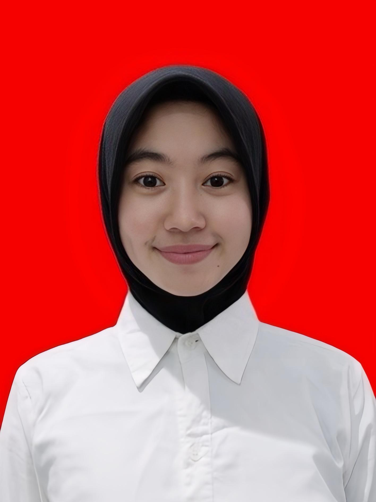

Candra Kurnia Armadani
S1 Teknik Informatika | Aspirant Software & Data Engineer
Fokus pada logika komputasional, clean code, dan pemecahan masalah berbasis data.
Work Gallery
Kumpulan sistem, proyek digital, dan karya teknis yang telah dikembangkan.
Rancang Bangun Sistem Aplikasi Terminal Interaktif
Pengembangan utilitas program berbasis C++/Python untuk otomatisasi perhitungan logis dan pemrosesan data teks dengan efisiensi alur kontrol yang optimal.
Studi Kasus Pemodelan Antarmuka Web Portofolio
Penyusunan arsitektur tampilan antarmuka berbasis HTML5 & CSS3 dengan menerapkan prinsip usability, navigasi adaptif, serta kemudahan akses pengguna.
What I Can Do
Mengkombinasikan logika komputasional, pemecahan masalah, dan teknik rekayasa perangkat lunak untuk membangun sistem yang handal dan terstruktur.
Software & Logic Engineering
Pengembangan utilitas program berbasis C++/Python dengan otomatisasi perhitungan logis, kontrol alur kompleks (nested loops, conditionals), dan penerapan clean code.
Web Development & UI Architecture
Penyusunan struktur antarmuka modern berbasis HTML5 & CSS3 yang responsif, mengutamakan pengalaman pengguna (usability), dan konsistensi visual di berbagai perangkat.
Analytical & Problem Solving
Pendekatan pemikiran komputasional, analisis galat (exception handling), pemodelan algoritma diagram alir, serta ketelitian tinggi dalam pemrosesan data.
Problem Solver. Aspirant Software & Data Engineer.
Candra Kurnia Armadani
S1 Teknik Informatika — UNESA | Sidoarjo, Jawa Timur
Mahasiswa S1 Teknik Informatika Universitas Negeri Surabaya yang berfokus pada pemecahan masalah komputasional, logika analitis, dan eksplorasi rekayasa perangkat lunak. Berorientasi pada ketelitian baris kode (clean code) serta pengembangan solusi berbasis data.
Siap bertumbuh pesat melalui kolaborasi proyek akademik, kompetisi teknologi, serta kontribusi aktif dalam ekosistem kampus dan komunitas pengembang open-source.
Aktivitas & Fokus Saat Ini
Pendidikan & Riwayat Akademik
UNIVERSITAS NEGERI SURABAYA
S1 Teknik Informatika
Spesialisasi Awal: Struktur Data & Algoritma, Pemrograman Berorientasi Objek (OOP), Pemikiran Komputasional.
Target Akademik: Mengembangkan portofolio perangkat lunak berbasis open-source dan aktif dalam riset teknologi.
SMA NEGERI 1 WARU
Jurusan IPA (Ilmu Pengetahuan Alam)
Fokus Pembelajaran: Memiliki landasan kuat pada Logika Matematika dan Fisika Komputasi.
LET'S WORK TOGETHER
Mencari tantangan dan masalah komputasional berikutnya untuk diselesaikan. Terbuka untuk peluang kolaborasi dalam rekayasa perangkat lunak, pengembangan web, dan analisis data.